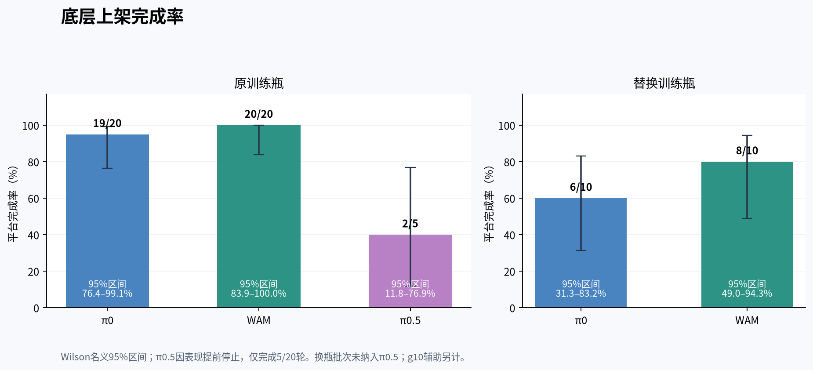
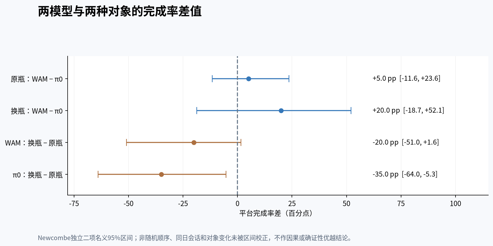
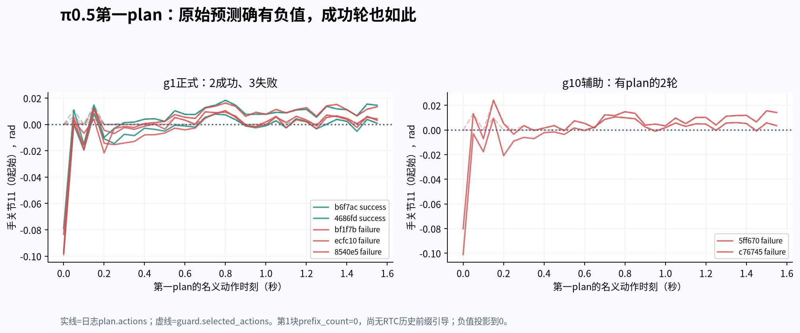

EVALUATION RECORD / 2026.10.31
底层上架
真机评测记录
pi0_latent_wam（WAM）在原瓶上架完成 20/20，已见替换瓶完成 8/10。π₀ 分别完成 19/20 和 6/10。共执行 65 轮正式试验。另有3条π0.5 g10辅助记录，不混入主实验分母。
范围与成功定义
10月31日正式批次仅包含桌面到底层上架，任务指令为 Place the bottle upright on the bottom shelf.。成功由操作者确认：自主直立放置、完整支撑、释放后稳定至少3秒、无人工辅助；没有独立认证全程无非预期接触。
相同三路RGB、19维关节接口、20Hz动作标签、32步预测、10步去噪，臂手主机下发均约60Hz。WAM/π0采用mean/std与RTC guidance10；π0.5采用quantile与guidance1。只有一个训练seed42，当前100条示教均用于训练，无独立验证集。
两种对象条件
| 条件 | 模型 | 完成/执行 | 名义95%区间 |
|---|---|---|---|
| 原训练瓶 | π0 | 19/20 | 76.4–99.1% |
| 原训练瓶 | WAM | 20/20 | 83.9–100.0% |
| 原训练瓶 | π0.5 | 2/5 | 11.8–76.9% |
| 替换训练瓶 | π0 | 6/10 | 31.3–83.2% |
| 替换训练瓶 | WAM | 8/10 | 49.0–94.3% |
原瓶计划三模型各20轮，π0.5观察较差表现后在5轮提前停止，尚余15轮未执行。替换瓶仅安排WAM与π0各10轮，训练中出现在全数据集20/100条episode；不能据此推算底层任务的交叉占比，也不能称未见对象/OOD。

原瓶上，WAM 完成率比 π₀ 高 5 个百分点（名义 95% 差值区间 −11.6 至 +23.6）。换瓶后差距为 20 个百分点（−18.7 至 +52.1）。从原瓶到替换瓶，WAM 完成率下降 20 个百分点，π₀ 下降 35 个百分点。两项模型间差值的区间均跨过零。对象、时间和运行会话同时变化，仍需更多独立试验确认优势。

请求与执行
| 模型 | 服务均值 | RPC均值 | RPC P95 |
|---|---|---|---|
| π0 | 246.4 | 254.8 | 265.4 |
| WAM | 239.7 | 249.0 | 258.0 |
| π0.5 | 258.2 | 267.6 | 277.0 |
原瓶响应数：WAM 1242、π₀ 为 1256、π0.5为304；工程请求不是独立任务重复。服务时间包含适配/采样/解码，RPC还含通信与客户端开销。约0.623秒是新请求间隔；20Hz是动作标签，60Hz是主机发送，三者含义不同。
成功确认中位数：原瓶 WAM 39.41 秒、π₀ 39.39 秒，换瓶 WAM 42.67 秒、π₀ 40.05 秒。此终点含稳定检查与人工观察反应；物理完成时刻未标注，不能作精确速度排名。
失败观察与诊断边界
主实验10次失败的原注分类是抓取4、放置3、未标注3。事后图像观察单独保留，不覆盖原结果。替换瓶 π₀ 的抓取失败轮 47d54fb9e0a64d14 与放置失败轮 0ed7ecac59494d1e 在主页提供连续、原速录像；它们显示不同阶段的问题，不能统一解释成识别不到层板。
π0.5首块手关节11（0起始）的原始目标为负，并投影到0，g1最大修正0.09878rad；两次成功轮也有0.07903与0.09763rad修正。这是排查动作分布与执行边界的线索，未证明归一化、限位或RTC就是根因。第一块尚无RTC历史前缀引导。

g10辅助3条原记录均失败，其中1条0.13秒停止、没有动作计划，且对象外观与配置存在疑点；另外2条有执行后在桌面倒瓶。这不是三次完整同条件A/B，也不并入主实验成为π0.5的2/8。
本批未记录正式期fault、非零手板错误或非零退出码。正常退出不证明没有物理接触，也不证明任务成功。没有接触力或统一阶段对齐的末端jerk测量，不宣称更平滑或更安全。
10 月 29 日 · 固定 24 步执行
三种模型分别用原训练瓶做了 10 轮底层上架。WAM 完成 8/10，π₀ 完成 6/10，π₀.₅ 完成 6/10。这一批沿用原始模型标签。
每次预测 32 步，按 20 Hz 执行前 24 步，再请求下一段动作。后续 RTC 批次改用异步请求，摆位与运行会话也有变化，因此两批分别报告完成率。
记录完整性与后续验证
存档分析覆盖65轮主实验与3轮辅助。689个来源文件复核未变，12204张无损输入PNG解码RGB哈希一致，4034个原始动作计划与接纳投影、RTC回执核对通过，26项完整性检查通过。旧30轮247个受保护文件保持不变。这些是记录完整性检查，不是方法优越性的统计证明。
仍需补充：独立数据划分、多训练种子、训练验证曲线、组件消融及更多任务。上述65轮结果支持讨论底层上架的可用性和对象条件敏感性，不外推其他任务；后续上下架与新瓶探索单独列于下方。
后续探索：上下架衔接与对象变化
2026年11月1日，沿用已有模型继续探索。以下与10月31日65轮正式上架分别统计，不合成总成功率。两阶段之间臂手归位、由操作者确认并启动下一阶段；下架初态继承各模型自己的上架结果。
| 模型 | 上架 | 条件下架 | 同轮两段完成 |
|---|---|---|---|
| WAM | 10/10 | 8/10 | 8/10 |
| π0 | 9/10 | 7/9 | 7/10 |
π₀ 一轮上架失败，未继续下架，故条件下架分母为9。目标样本量在观察已有结果后由每模型20轮改为10轮，模型顺序按会话分块；场景中苹果的位置也有变化。这些是探索性描述，不能单独分离上架质量与下架策略能力。
| 条件 | 模型 | 原始两段完成 | 复核后任务完成 | 含故障阶段 |
|---|---|---|---|---|
| 第一只新瓶 | WAM | 3/4 | 3/4 | 1 |
| 第一只新瓶 | π0 | 2/4 | 4/4 | 2 |
| 第二只新瓶 | WAM | 3/4 | 3/4 | 0 |
| 第二只新瓶 | π0 | 4/4 | 4/4 | 0 |
第一瓶 π₀ 的两次下架原始标为失败并有非零退出；操作者确认瓶子已放稳至少3秒、随后触及Z下限，因此追加任务成功复核，执行故障仍保留。第一瓶跨越控制器Z下限80→60mm的变更，第二瓶在60mm下执行，两瓶不能合并为冻结条件下的泛化成绩。
每组仅4轮，瓶子训练未见来自操作者登记，缺尺寸、重量与摆位的严格控制。WAM与π0的差别只有1轮，不足以证明稳定的泛化优势。原瓶起点垫高各仅1次，均保护停止，余次取消；位置扰动组跳过。中层正式上架仅 WAM 两次、π₀ 一次失败，未达到计划样本量。
模型取舍：在这批底层上架试验中，WAM 在两种已见瓶子上的完成率都高于 π₀，其中替换瓶的差距更大。原瓶上下架也多完成 1 轮。未见瓶探索中，WAM 在两只新瓶上各完成 3/4 轮，仍需扩大样本检验迁移表现。π₀ 保留为对照，π₀.₅ 优先排查动作分布与执行约束。数据、预算相同不等于三模型只差一个组件。
下载后续73个实际阶段 CSV ↓ · 原始结果、任务复核与故障 JSON ↗。此处73阶段包括39个原瓶阶段、32个新瓶阶段、2个垫高阶段；不是73轮独立任务。
为什么发送正常，动作仍可能不对？
部署诊断将原始预测、速度与边界约束后的命令、关节实测反馈分开。20Hz动作标签、约0.623秒的新请求间隔和约60Hz主机发送属于不同层。低命令跟踪误差不能证明硬件执行了未经约束的原始计划，也不能代替TCP精度或物理抖动评估。
旧固定窗口曾出现观测到首点约242–251ms的时序偏移与约163–175ms末点保持。后续用观测时间轴、异步请求、计划共同激活及过期点退休处理衔接，并保留RTC回执。多个条件同时改变，现有结果不能把完成率变化全部归于RTC；还缺同条件开关对照。
训练与部署分别验收：100条示教、68,855帧、四任务各25条，三模型单seed42各18,000次更新、导出checkpoint17999；100条均用于训练，无独立验证集。训练成功、软件检查通过与真机任务完成是三个不同结论。
全部65轮正式记录
2026 年 11 月 8 日按项目作者核对结果，更正 10 月 31 日及后续 RTC 实验中 π₀ 与 pi0_latent_wam 的模型归属。逐轮 ID、成败、时间及操作者原始备注均沿用原记录。停止秒数从trial_started到操作者停止请求，失败的停止时刻不等于失败发生时刻；成功确认包含人工反应。下载CSV可查看逐轮RPC和手目标投影统计。
| # | 轮ID | 对象 | 模型 | 原结果 | 停止秒 | 原始原因 |
|---|---|---|---|---|---|---|
| 1 | 05301d0970374555 | 原训练瓶 | π0 | 完成 | 39.39 | 操作者确认自主完成、释放并稳定至少3秒，无人工辅助。 |
| 2 | 853744a98c3a4f56 | 原训练瓶 | π0 | 完成 | 39.33 | 操作者确认自主完成、释放并稳定至少3秒，无人工辅助。 |
| 3 | e52e548a391b4cf4 | 原训练瓶 | π0 | 完成 | 41.79 | 操作者确认自主完成、释放并稳定至少3秒，无人工辅助。 |
| 4 | a080f179b87e4db9 | 原训练瓶 | π0 | 完成 | 39.17 | 操作者确认自主完成、释放并稳定至少3秒，无人工辅助。 |
| 5 | 33bced0b458847b3 | 原训练瓶 | π0 | 完成 | 39.42 | 操作者确认自主完成、释放并稳定至少3秒，无人工辅助。 |
| 6 | 8e649f07ee904d1b | 原训练瓶 | π0 | 完成 | 38.30 | 操作者确认自主完成、释放并稳定至少3秒，无人工辅助。 |
| 7 | 2ffcbca0b68c4fe2 | 原训练瓶 | π0 | 失败 | 34.39 | 操作者标记失败，放置时瓶身倾斜，瓶子倒了 |
| 8 | 3cd6028a6cd8404a | 原训练瓶 | π0 | 完成 | 42.22 | 操作者确认自主完成、释放并稳定至少3秒，无人工辅助。 |
| 9 | f652ef4ccae1497d | 原训练瓶 | π0 | 完成 | 44.02 | 操作者确认自主完成、释放并稳定至少3秒，无人工辅助。 |
| 10 | a9df6aae2a69453b | 原训练瓶 | π0 | 完成 | 40.09 | 操作者确认自主完成、释放并稳定至少3秒，无人工辅助。 |
| 11 | 8765797a56e8491e | 原训练瓶 | WAM | 完成 | 42.61 | 操作者确认自主完成、释放并稳定至少3秒，无人工辅助。 |
| 12 | 6eca0956cbb449b6 | 原训练瓶 | WAM | 完成 | 37.34 | 操作者确认自主完成、释放并稳定至少3秒，无人工辅助。 |
| 13 | 5d614a4d69d94f05 | 原训练瓶 | WAM | 完成 | 39.69 | 操作者确认自主完成、释放并稳定至少3秒，无人工辅助。 |
| 14 | 1a8df56c05d74486 | 原训练瓶 | WAM | 完成 | 40.42 | 操作者确认自主完成、释放并稳定至少3秒，无人工辅助。 |
| 15 | ae3e61e7e3cb4ea4 | 原训练瓶 | WAM | 完成 | 37.94 | 操作者确认自主完成、释放并稳定至少3秒，无人工辅助。 |
| 16 | acc46297831349eb | 原训练瓶 | WAM | 完成 | 37.75 | 操作者确认自主完成、释放并稳定至少3秒，无人工辅助。 |
| 17 | 80b4e512f7d84368 | 原训练瓶 | WAM | 完成 | 35.30 | 操作者确认自主完成、释放并稳定至少3秒，无人工辅助。 |
| 18 | 58c301edcc294af0 | 原训练瓶 | WAM | 完成 | 39.86 | 操作者确认自主完成、释放并稳定至少3秒，无人工辅助。 |
| 19 | afa489009f2e489c | 原训练瓶 | WAM | 完成 | 37.64 | 操作者确认自主完成、释放并稳定至少3秒，无人工辅助。 |
| 20 | 5d6ae82f33c64a9a | 原训练瓶 | WAM | 完成 | 37.66 | 操作者确认自主完成、释放并稳定至少3秒，无人工辅助。 |
| 21 | b6f7acdfe53e4442 | 原训练瓶 | π0.5 | 完成 | 44.29 | 操作者确认自主完成、释放并稳定至少3秒，无人工辅助。 |
| 22 | 4686fd3f443e4ec7 | 原训练瓶 | π0.5 | 完成 | 42.81 | 操作者确认自主完成、释放并稳定至少3秒，无人工辅助。 |
| 23 | bf1f7b7fa679443f | 原训练瓶 | π0.5 | 失败 | 54.06 | 操作者标记失败，抓取失败，瓶子倒了 |
| 24 | ecfc10623c9b495d | 原训练瓶 | π0.5 | 失败 | 27.38 | 操作者标记失败，结束后补充阶段与原因。 |
| 25 | a5577b6becbf4528 | 原训练瓶 | π0 | 完成 | 39.61 | 操作者确认自主完成、释放并稳定至少3秒，无人工辅助。 |
| 26 | 00a14c5976c94b31 | 原训练瓶 | π0 | 完成 | 38.65 | 操作者确认自主完成、释放并稳定至少3秒，无人工辅助。 |
| 27 | 715a65d0b6c1436d | 原训练瓶 | WAM | 完成 | 39.33 | 操作者确认自主完成、释放并稳定至少3秒，无人工辅助。 |
| 28 | 0d1a038be5d84868 | 原训练瓶 | WAM | 完成 | 41.20 | 操作者确认自主完成、释放并稳定至少3秒，无人工辅助。 |
| 29 | 890a44eb861b4d78 | 原训练瓶 | WAM | 完成 | 38.21 | 操作者确认自主完成、释放并稳定至少3秒，无人工辅助。 |
| 30 | 44d63ad9983b4d87 | 原训练瓶 | WAM | 完成 | 39.94 | 操作者确认自主完成、释放并稳定至少3秒，无人工辅助。 |
| 31 | 212fa85272254fb3 | 原训练瓶 | WAM | 完成 | 39.48 | 操作者确认自主完成、释放并稳定至少3秒，无人工辅助。 |
| 32 | ea3ab40db86e4258 | 原训练瓶 | π0 | 完成 | 38.93 | 操作者确认自主完成、释放并稳定至少3秒，无人工辅助。 |
| 33 | cefa4c3e16ea4794 | 原训练瓶 | π0 | 完成 | 38.11 | 操作者确认自主完成、释放并稳定至少3秒，无人工辅助。 |
| 34 | 9c140fffcf7a4e72 | 原训练瓶 | π0 | 完成 | 38.28 | 操作者确认自主完成、释放并稳定至少3秒，无人工辅助。 |
| 35 | 8540e5f925f94845 | 原训练瓶 | π0.5 | 失败 | 21.64 | 操作者标记失败，抓取失败，瓶子倒了 |
| 36 | f8efeefa69af467d | 原训练瓶 | WAM | 完成 | 40.39 | 操作者确认自主完成、释放并稳定至少3秒，无人工辅助。 |
| 37 | 6fba480a8a284155 | 原训练瓶 | WAM | 完成 | 38.02 | 操作者确认自主完成、释放并稳定至少3秒，无人工辅助。 |
| 38 | 69700159ad43469f | 原训练瓶 | WAM | 完成 | 41.40 | 操作者确认自主完成、释放并稳定至少3秒，无人工辅助。 |
| 39 | c4c5282cea5a4290 | 原训练瓶 | WAM | 完成 | 39.49 | 操作者确认自主完成、释放并稳定至少3秒，无人工辅助。 |
| 40 | b3cbcb9015f84351 | 原训练瓶 | WAM | 完成 | 39.14 | 操作者确认自主完成、释放并稳定至少3秒，无人工辅助。 |
| 41 | 86e41ef47358427c | 原训练瓶 | π0 | 完成 | 39.68 | 操作者确认自主完成、释放并稳定至少3秒，无人工辅助。 |
| 42 | b2573056619541d5 | 原训练瓶 | π0 | 完成 | 37.65 | 操作者确认自主完成、释放并稳定至少3秒，无人工辅助。 |
| 43 | 4b3f761727204a09 | 原训练瓶 | π0 | 完成 | 40.67 | 操作者确认自主完成、释放并稳定至少3秒，无人工辅助。 |
| 44 | 19d0f2a7938240ff | 原训练瓶 | π0 | 完成 | 41.70 | 操作者确认自主完成、释放并稳定至少3秒，无人工辅助。 |
| 45 | fcc7005b85e24ff2 | 原训练瓶 | π0 | 完成 | 38.79 | 操作者确认自主完成、释放并稳定至少3秒，无人工辅助。 |
| 46 | 1c4f63a388f44ee9 | 替换训练瓶 | π0 | 完成 | 39.86 | 操作者确认自主完成、释放并稳定至少3秒，无人工辅助。 |
| 47 | 47d54fb9e0a64d14 | 替换训练瓶 | π0 | 失败 | 17.84 | 操作者标记失败，抓取时瓶子倒地 |
| 48 | 041f10a882ec4ec0 | 替换训练瓶 | π0 | 完成 | 40.14 | 操作者确认自主完成、释放并稳定至少3秒，无人工辅助。 |
| 49 | 0ed7ecac59494d1e | 替换训练瓶 | π0 | 失败 | 35.59 | 操作者标记失败，放置时没放稳，瓶子倒地 |
| 50 | dc8f55ef755e4d1e | 替换训练瓶 | π0 | 完成 | 39.36 | 操作者确认自主完成、释放并稳定至少3秒，无人工辅助。 |
| 51 | 046b3bbc50c846b8 | 替换训练瓶 | WAM | 完成 | 44.11 | 操作者确认自主完成、释放并稳定至少3秒，无人工辅助。 |
| 52 | ae1c4b288f8a48dc | 替换训练瓶 | WAM | 完成 | 43.95 | 操作者确认自主完成、释放并稳定至少3秒，无人工辅助。 |
| 53 | 2e9d38388cd24b18 | 替换训练瓶 | WAM | 完成 | 41.39 | 操作者确认自主完成、释放并稳定至少3秒，无人工辅助。 |
| 54 | 0df658f48ffc4001 | 替换训练瓶 | WAM | 完成 | 41.11 | 操作者确认自主完成、释放并稳定至少3秒，无人工辅助。 |
| 55 | 299304024234477d | 替换训练瓶 | WAM | 完成 | 41.19 | 操作者确认自主完成、释放并稳定至少3秒，无人工辅助。 |
| 56 | 17b2924a344d4ea7 | 替换训练瓶 | WAM | 完成 | 44.66 | 操作者确认自主完成、释放并稳定至少3秒，无人工辅助。 |
| 57 | 775e8d3cba0a4c81 | 替换训练瓶 | π0 | 失败 | 16.80 | 操作者标记失败，结束后补充阶段与原因。 |
| 58 | 1463b7201dba4494 | 替换训练瓶 | π0 | 失败 | 32.87 | 操作者标记失败，结束后补充阶段与原因。 |
| 59 | 3102fbf9d5cd4584 | 替换训练瓶 | π0 | 完成 | 39.95 | 操作者确认自主完成、释放并稳定至少3秒，无人工辅助。 |
| 60 | ec8a56e765404779 | 替换训练瓶 | π0 | 完成 | 42.08 | 操作者确认自主完成、释放并稳定至少3秒，无人工辅助。 |
| 61 | 4f48b21a7a5c48b8 | 替换训练瓶 | π0 | 完成 | 41.64 | 操作者确认自主完成、释放并稳定至少3秒，无人工辅助。 |
| 62 | c6dbb4a9b4824b44 | 替换训练瓶 | WAM | 失败 | 32.33 | 操作者标记失败，放置时瓶子倒地 |
| 63 | 850683708e88487b | 替换训练瓶 | WAM | 失败 | 15.49 | 操作者标记失败，抓取时瓶子倒地 |
| 64 | 7fead719f65e4a13 | 替换训练瓶 | WAM | 完成 | 40.98 | 操作者确认自主完成、释放并稳定至少3秒，无人工辅助。 |
| 65 | ff120ec015ed4e7e | 替换训练瓶 | WAM | 完成 | 44.99 | 操作者确认自主完成、释放并稳定至少3秒，无人工辅助。 |